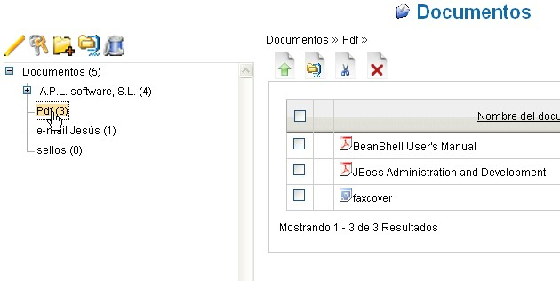
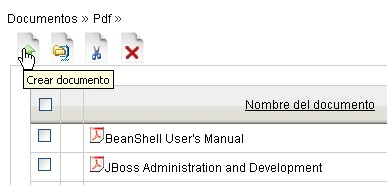
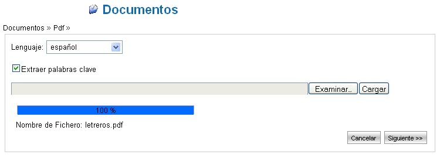
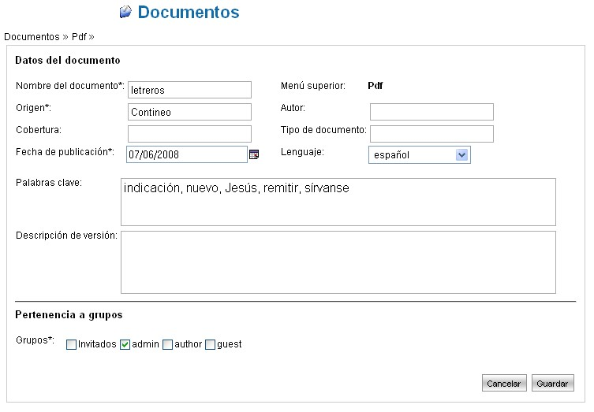

Añadir un Documento |
La sección documental es accesible
seleccionando desde el menú principal la palabra
"Documentos".
A continuación se describen las fases necesarias para
agregar un nuevo documento.
- Seleccionar la carpeta receptora
Navegar en el árbol jerárquico del sistema presente en la parte izquierda de la pantalla

- Transferir el fichero del documento al
sistema
Acceder a la pantalla de cargar documento nuevo presionando el icono "Crear documento" y seleccionar el fichero en el propio Disco Duro

Seleccionar el lenguage del documento (esta operación es muy importante porque determina el tipo dei analizador de lenguage que el sistema utilizará para extraer y reconocer el contenido del documento y sus palabras clave).
Activar la carga del documento en el sistema pulsando el botón "Cargar".
Al arrancar tal operación, la barra de progreso inferior mostrará el porcentaje de avance de la operación.
Al término del procedimiento de transferencia del fichero presione el botón "Siguiente".
- Definir los Datos del documento
En esta pantalla es posible especificar y modificar la información adicional sobre el documento que se está creando.
El sistema estrapola automáticamente alguna de la información del fichero transferido (sobre la base del lenguaje seleccionado) y extrae automáticamente los campos Nombre del documento, Autor y Palabras Clave recabándolos directamente del contenido del fichero.
La sección del sistema Palabras Clave muestra los documentos reagrupados por clave.
Es posible, además definir una descripción de la versión de un documento. Cuando se añada un documento, se crea la versión 1.0, usando la descripción especificada.

- Especificar preferencias de Seguridad
del documento
La sección "Pertenencia al grupo" visible en la imagen precedente se usa para definir la seguridad del documento.
Al seleccionar uno o más grupos, se añadirá el documento a los grupos y los usuarios de estos grupo heredarán automáticamente los permisos de lectura/escritura sobre el documento definidos en cada grupo.
Para mayor información sobre los permisos de los grupos vaya a la sección Gestionar Grupos del manual.
- Salvar el documento
Pulsando el botón "Salvar" en la parte de abajo a la derecha de la pantalla, el nuevo documento se crea y pasa a ser accesible tanto como para la búsqueda como para la consulta.